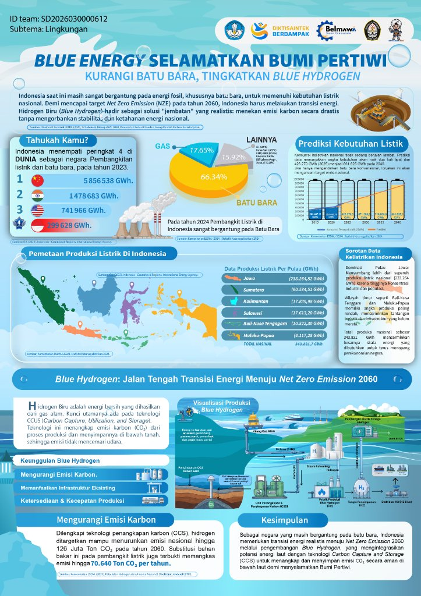

BLUE ENERGY SELAMATKAN BUMI PERTIWI: KURANGI BATU BARA, TINGKATKAN BLUE HYDROGEN
Strategi transisi energi realistis menuju Net Zero Emission (NZE) 2060 melalui pemanfaatan Blue Hydrogen berteknologi Carbon Capture, Utilization, and Storage (CCUS) untuk mengatasi ketergantungan pembangkit listrik batu bara di Indonesia.

💡 Ringkasan Eksekutif
Indonesia saat ini masih sangat bergantung pada energi fosil, khususnya batu bara (66,34%), untuk memenuhi pasokan kelistrikan nasional. Demi mencapai target Net Zero Emission (NZE) pada tahun 2060 di tengah lonjakan kebutuhan listrik yang diproyeksikan berlipat ganda, diperlukan jembatan transisi energi yang realistis. Hidrogen Biru (Blue Hydrogen) yang diintegrasikan dengan teknologi penangkapan dan penyimpanan karbon (Carbon Capture and Storage / CCS) hadir sebagai jalan tengah paling aplikatif: memangkas emisi karbon hingga puluhan juta ton tanpa mengorbankan stabilitas dan ketahanan energi nasional.
⚡ 1. Kondisi Kelistrikan Nasional & Ancaman Ketergantungan Batu Bara
Berdasarkan data dari International Energy Agency (IEA) dan Kementerian ESDM, Indonesia menempati peringkat ke-4 di dunia sebagai negara dengan kapasitas pembangkitan listrik dari batu bara terbesar, mencapai angka 299.628 GWh pada tahun 2023, berada tepat di bawah China (5.856.538 GWh), India (1.478.683 GWh), dan Amerika Serikat (741.966 GWh).
Pada tahun 2024, struktur bauran energi pembangkit listrik Indonesia masih sangat timpang dan didominasi oleh energi fosil kotor:
| Sumber Energi Pembangkit | Persentase Pangsa | Karakteristik & Dampak Emisi |
|---|---|---|
| Batu Bara (PLTU) | 66.34% | Penyumbang emisi gas rumah kaca (GRK) dan polusi karbon terbesar di Indonesia. |
| Gas Alam (PLTG / PLTGU) | 17.65% | Fosil yang lebih bersih; menjadi bahan baku potensial untuk produksi Blue Hydrogen. |
| Energi Terbarukan & Lainnya | 15.92% | Air (6,25%), Panas Bumi (5,57%), Biomassa/BBN, Surya, dan Angin. |
Kondisi ini diperparah oleh proyeksi pertumbuhan konsumsi listrik yang terus meningkat pesat seiring industrialisasi, elektrifikasi transportasi, dan pertumbuhan populasi. Kebutuhan listrik nasional diproyeksikan meroket dari 426.270 GWh (2025) menjadi 861.625 GWh pada tahun 2040. Jika pasokan tambahan tersebut tetap dipasok oleh PLTU batu bara konvensional, lonjakan emisi karbon akan menggagalkan seluruh komitmen iklim global Indonesia.
🗺️ 2. Pemetaan & Ketimpangan Produksi Listrik Antar-Pulau
Produksi listrik di Indonesia juga menghadapi tantangan geografis kepulauan yang luar biasa. Dari total produksi listrik nasional sebesar 343.831,7 GWh (ESDM 2024), distribusi antar pulau menunjukkan konsentrasi beban yang sangat terpusat di wilayah barat:
| Wilayah Kepulauan | Produksi Listrik (GWh) | Pangsa Nasional | Sorotan Kondisi Wilayah |
|---|---|---|---|
| Pulau Jawa | 233.264,52 GWh | 67.8% | Pusat kepadatan penduduk, kawasan industri manufaktur, dan jaringan grid interkoneksi utama. |
| Pulau Sumatera | 60.534,51 GWh | 17.6% | Pusat perkebunan, pertambangan, dan industri pengolahan sumber daya. |
| Kalimantan | 17.839,98 GWh | 5.2% | Wilayah lumbung batu bara dan calon kawasan Ibu Kota Nusantara (IKN). |
| Sulawesi | 17.613,20 GWh | 5.1% | Peningkatan pesat kebutuhan energi akibat hilirisasi industri smelter nikel. |
| Bali & Nusa Tenggara | 10.522,30 GWh | 3.1% | Konsumsi sektor pariwisata; potensi surya dan angin yang sangat tinggi. |
| Maluku & Papua | 4.117,28 GWh | 1.2% | Tantangan elektrifikasi daerah terisolasi, grid terfragmentasi, dan biaya logistik tinggi. |
🔬 3. Blue Hydrogen: Jalan Tengah Transisi Energi Menuju NZE 2060
Meskipun energi terbarukan murni seperti Green Hydrogen (dari elektrolisis air bertenaga surya/angin) adalah tujuan akhir, biaya investasinya saat ini masih sangat mahal dan kapasitas jaringannya belum mampu menggantikan baseload PLTU skala gigawatt dalam jangka pendek.
Di sinilah Hidrogen Biru (Blue Hydrogen) mengambil peranan strategis sebagai game-changer:
⚙️ Mekanisme Kerja Blue Hydrogen + CCS:
Hidrogen diproduksi dari gas alam (CH4) melalui proses Steam Methane Reforming (SMR). Alih-alih melepaskan karbon dioksida (CO2) ke atmosfer seperti metode konvensional (Grey Hydrogen), teknologi Carbon Capture and Storage (CCS) menangkap lebih dari 90% gas CO2 tersebut, mengompresinya, dan menyimpannya secara permanen di lapisan geologis dalam bumi atau reservoir bawah laut (*subsea aquifer*).
🏆 4. Tiga Keunggulan Kunci Blue Hydrogen untuk Indonesia
Pengurangan Emisi Karbon Skala Masif
Pemanfaatan hidrogen biru ditargetkan mampu memangkas emisi karbon nasional hingga 126 Juta Ton CO2 pada tahun 2060. Pada sektor pembangkit listrik, substitusi bahan bakar ini terbukti mampu mereduksi hingga 70.640 Ton CO2 per tahun untuk setiap pembangkit yang dikonversi.
Pemanfaatan Infrastruktur Eksisting (Cost-Efficient)
Indonesia tidak perlu memensiunkan seluruh infrastruktur transmisi dan kilang gas secara mendadak. Pipa gas, terminal LNG, dan turbin gas yang telah ada (seperti di Jawa dan Sumatera) dapat dimanfaatkan kembali melalui teknik blending maupun konversi bertahap, menghemat triliunan rupiah biaya modal transisi.
Ketersediaan & Kecepatan Pasokan (Baseload Reliability)
Berbeda dengan energi surya atau angin yang bersifat intermiten (bergantung cuaca), produksi Blue Hydrogen dapat berjalan stabil 24/7 untuk menjamin keandalan pasokan listrik industri tanpa risiko pemadaman mendadak.
🇮🇩 5. Kesimpulan & Rekomendasi
Sebagai negara yang masih sangat bergantung pada batu bara, Indonesia membutuhkan langkah transisi yang realistis, terukur, dan tidak mengorbankan pertumbuhan ekonomi. Blue Hydrogen yang mengintegrasikan potensi gas laut dengan teknologi Carbon Capture and Storage (CCS) merupakan solusi jembatan terbaik untuk menekan emisi secara drastis dalam dua dekade ke depan.
Langkah ini sekaligus mempersiapkan fondasi infrastruktur nasional menuju era Green Hydrogen seutuhnya pada tahun 2060, demi menjaga kedaulatan energi serta menyelamatkan Bumi Pertiwi dari krisis perubahan iklim.
1. Kementerian Energi dan Sumber Daya Mineral (ESDM) Republik Indonesia, Statistik Ketenagalistrikan 2024.
2. International Energy Agency (IEA), Indonesia: Countries & Regions Energy Agency Report.
3. Kementerian ESDM, Peta Jalan Hidrogen dan Amonia Nasional Menuju Net Zero Emission 2060.
4. Program Pembinaan Mahasiswa Diktisaintek Berdampak • Belmawa • Universitas Putra Bangsa Kebumen.